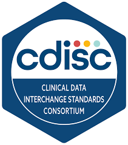
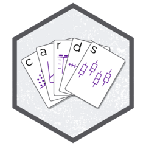

はじめに
このドキュメントはCDISC ARSの概要と、{cards} packageによって作成されるARDの構造について説明することを目的とします。

ARSの概要
ARSとは
ARS = Analysis Results Standard
CDISCが策定している「解析結果そのものを、機械可読・再利用可能な形で標準化するための規格」 のことです。
SDTM/ADaMが入力データを標準化したものであるのに対し、ARSは出力結果を標準化しようと試みています。
ARS-IS
ARS-IS = ARS - Implementation Specification ARSをどのように表現・実装するかを定義した文書
ARDの概要
ARDの構造
正直
###ARDの現在地 ARD自体の 3. 「ARSって結局どんなデータ構造？」
https://pharmasug.org/proceedings/japan2024/PharmaSUG-Japan-2024-02.pdf?utm_source=chatgpt.com
https://github.com/clymbclinical/siera
https://github.com/cdisc-org/analysis-results-standard/tree/main/workfiles/examples/ARS%20v1
ARDの作成例
{cards}というPackageを用いて、実際にARDがどのように作成されるのか実演します。
{cards}とは
{cards}とはARD作成用の Packageの一つで、ADaMから簡便にARDを生成することができる点が特徴。

準備
ARDを作成するための準備としてDummy dataを用意します。
adae <- pharmaverseadam::adae
adsl <- pharmaverseadam::adsl
adae
# A tibble: 1,191 × 107
STUDYID DOMAIN USUBJID AESEQ AESPID AETERM AELLT AELLTCD AEDECOD AEPTCD AEHLT
<chr> <chr> <chr> <dbl> <chr> <chr> <chr> <dbl> <chr> <dbl> <chr>
1 CDISCP… AE 01-701… 1 E07 APPLI… APPL… NA APPLIC… NA HLT_…
2 CDISCP… AE 01-701… 2 E08 APPLI… APPL… NA APPLIC… NA HLT_…
3 CDISCP… AE 01-701… 3 E06 DIARR… DIAR… NA DIARRH… NA HLT_…
4 CDISCP… AE 01-701… 2 E09 ERYTH… LOCA… NA ERYTHE… NA HLT_…
5 CDISCP… AE 01-701… 1 E08 ERYTH… ERYT… NA ERYTHE… NA HLT_…
6 CDISCP… AE 01-701… 4 E08 ERYTH… ERYT… NA ERYTHE… NA HLT_…
7 CDISCP… AE 01-701… 3 E10 ATRIO… AV B… NA ATRIOV… NA HLT_…
8 CDISCP… AE 01-701… 1 E04 APPLI… APPL… NA APPLIC… NA HLT_…
9 CDISCP… AE 01-701… 2 E05 APPLI… APPL… NA APPLIC… NA HLT_…
10 CDISCP… AE 01-701… 1 E08 APPLI… APPL… NA APPLIC… NA HLT_…
# ℹ 1,181 more rows
# ℹ 96 more variables: AEHLTCD <dbl>, AEHLGT <chr>, AEHLGTCD <dbl>,
# AEBODSYS <chr>, AEBDSYCD <dbl>, AESOC <chr>, AESOCCD <dbl>, AESEV <chr>,
# AESER <chr>, AEACN <chr>, AEREL <chr>, AEOUT <chr>, AESCAN <chr>,
# AESCONG <chr>, AESDISAB <chr>, AESDTH <chr>, AESHOSP <chr>, AESLIFE <chr>,
# AESOD <chr>, AEDTC <chr>, AESTDTC <chr>, AEENDTC <chr>, AESTDY <dbl>,
# AEENDY <dbl>, TRTSDT <date>, TRTEDT <date>, DTHDT <date>, EOSDT <date>, …
ARDの作成
{cards}では作成したいTable/Figure/Listingに合わせて、使用するべき関数が分かれています。
ここでは、AE集計のTable作成用のARDとして、ard_stack_hierarchicalを用います。
library(cards)
ard <- adae %>%
filter(
AEBODSYS == "EYE DISORDERS",
TRT01A == "Placebo"
) %>%
cards::ard_stack_hierarchical(
by = TRT01A,
variables = c(AEBODSYS, AEDECOD),
denominator = adsl,
id = USUBJID,
over_variables = TRUE
)
ard %>% view()
ARDの作成
{cards}では作成したいTable/Figure/Listingに合わせて、使用するべき関数が分かれています。
所感
- ARSの実装自体はまだ実例が少なく、全体像が見えにくい。
- 仮にARSをPMDA/FDAに提出したとして、その結果が活用されるのだろうか？という点は疑問が残った。
- 一方で、ARDを用いて解析結果を標準化したDataにすることは、Sponserにとっても一定の価値がありそうだと考える -> 業務の標準化に繋がるため。
- ただし、導入コストが非常に高いため、payするまでに時間がかかりそうだとも感じた。